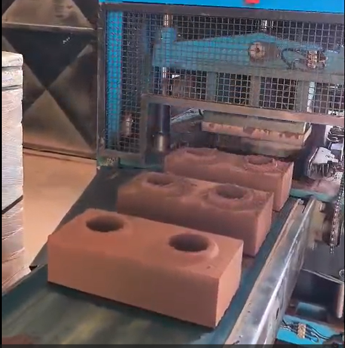
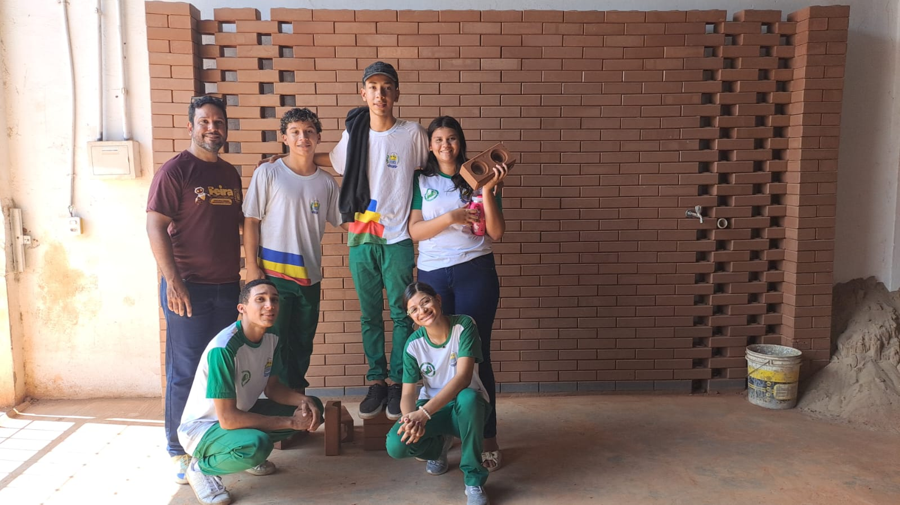

🔥 Calor Excessivo
As altas temperaturas do Nordeste tornam ambientes internos desconfortáveis e aumentam o consumo de energia com ventilação e climatização.
O Eco-Brick reutiliza resíduos descartados para criar materiais de construção acessíveis, sustentáveis e adaptados às necessidades climáticas do Nordeste brasileiro.
Desafios ambientais e urbanos que exigem soluções inovadoras.
As altas temperaturas do Nordeste tornam ambientes internos desconfortáveis e aumentam o consumo de energia com ventilação e climatização.
Milhões de toneladas de plástico são descartadas todos os anos, gerando impactos ambientais duradouros.
Muitas soluções sustentáveis ainda possuem custos elevados, dificultando sua adoção em larga escala.

O Eco-Brick transforma resíduos em materiais de construção sustentáveis, oferecendo conforto térmico, redução de impactos ambientais e incentivo à economia circular.
Kg de plástico reaproveitado
% de melhoria térmica
Compromisso sustentável
ODS impactadas
Redução do descarte inadequado de resíduos plásticos.
Ambientes mais agradáveis e eficientes.
Redução da propagação de ruídos.
Solução acessível para diferentes públicos.
Transformação de resíduos em novos produtos.
Potencial de uso em escolas e comunidades.
O Eco-Brick gera benefícios ambientais, sociais, econômicos e educacionais, contribuindo para um futuro mais sustentável.
Redução do descarte inadequado de resíduos plásticos por meio do reaproveitamento de materiais que seriam destinados a aterros, rios ou áreas urbanas, promovendo a preservação ambiental e a economia circular.
Melhoria do conforto térmico em ambientes escolares e residenciais, proporcionando mais bem-estar, qualidade de vida e condições adequadas para estudo, trabalho e convivência.
Transformação de resíduos em materiais com valor agregado, incentivando soluções de baixo custo e ampliando o acesso a alternativas sustentáveis para diferentes comunidades.
Estimula a educação ambiental, o pensamento inovador e o protagonismo estudantil, permitindo que os jovens desenvolvam soluções reais para problemas da sociedade.
Tornar as cidades seguras, resilientes e sustentáveis.
Reduzir o desperdício
Adotar medidas urgentes para combater as mudanças climáticas e seus impactos.

Projeto desenvolvido pelos estudantes do CETI Joel Ribeiro, sob orientação do professor Alexandre Moura.
Faça parte da solução que transforma resíduos plásticos em inovação, conforto e impacto positivo para a sociedade.
Falar com a Equipe